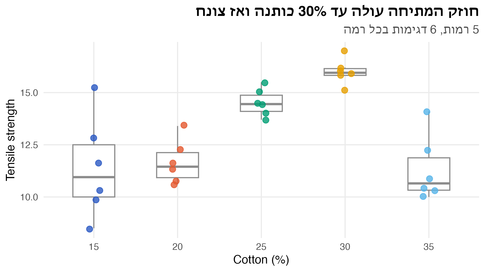
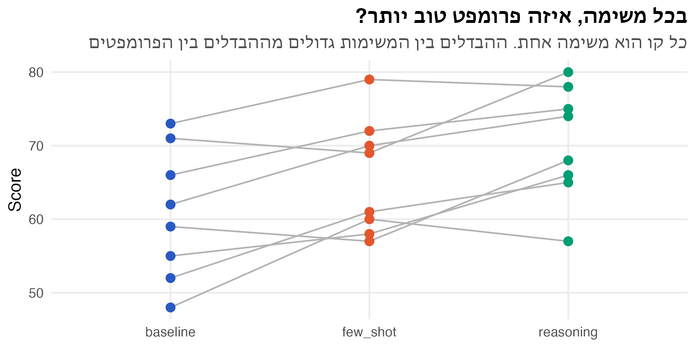
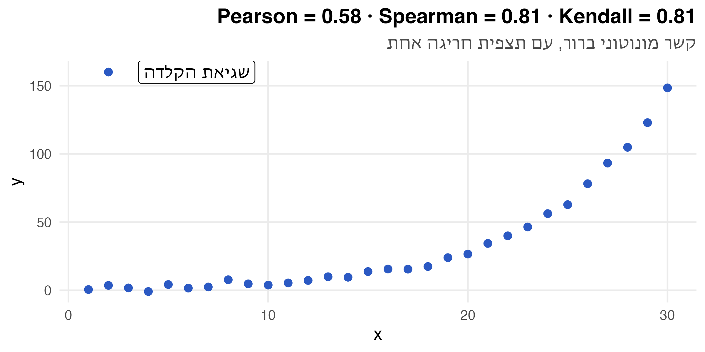
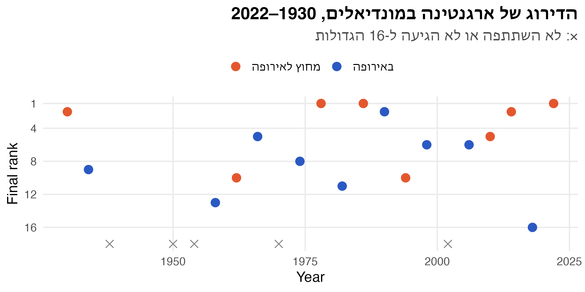

# F(x) = 1 - 1/(1+x) => x = 1/(1-u) - 1
n <- 20000
heavy <- tibble(
i = 1:n,
x = 1 / (1 - runif(n)) - 1
) |>
mutate(
`ממוצע מצטבר` = cummean(x),
`חציון מצטבר` = map_dbl(i, \(k) median(x[seq_len(k)]))
) |>
filter(i %% 20 == 0) |>
pivot_longer(c(`ממוצע מצטבר`, `חציון מצטבר`), names_to = "stat")
ggplot(heavy, aes(i, value, colour = stat)) +
geom_hline(yintercept = 1, linetype = "dashed", colour = "grey50") +
geom_line(linewidth = 0.8) +
scale_x_log10(labels = label_comma()) +
scale_colour_manual(values = c(nanas_pal[["accent"]], nanas_pal[["primary"]])) +
labs(title = "החציון מתכנס ל-1, הממוצע ממשיך לטפס",
subtitle = "דגימות מהתפלגות שבה התוחלת אינסופית",
x = "Sample size (log scale)", y = NULL, colour = NULL)1. שיטות א-פרמטריות
ניתוח נתונים סטטיסטי · הרצאה 1
ד״ר עדי שריד
2026-10-01
על מה נדבר היום
- מתי ההנחות של מבחן t ו-ANOVA לא מתקיימות, ולמה זה משנה
- מבחן הסימן: השערות על החציון, גם למדגמים מזווגים
- מבחן הדירוגים המסומנים (Wilcoxon signed-rank)
- מבחן סכום הדירוגים (Wilcoxon rank-sum / Mann–Whitney)
- ניתוח שונות א-פרמטרי: Kruskal–Wallis ו-Friedman
- מתאם על דירוגים: Spearman ו-Kendall
למה צריך שיטות א-פרמטריות?
הרעיון
- שיטות פרמטריות (מבחן t, ANOVA) מניחות התפלגות ידועה של תגובת המערכת, בדרך כלל נורמלית
- שיטות א-פרמטריות מסתפקות במידע חלקי על ההתפלגות
- הן נשענות פחות על הערכים עצמם ויותר על הסדר שלהם (הדירוג)
- אין שיטה אחת לכל דבר: לכל השערה יש מבחן ייעודי
כשהתוחלת בכלל לא קיימת
דוגמה: \(f(x) = \dfrac{1}{(1+x)^2}, \quad x \in [0, \infty)\)
\[ \mu = \int_0^\infty \frac{x}{(1+x)^2}\,dx = \infty \]
\[ F(a) = 1 - \frac{1}{1+a} = 0.5 \;\Rightarrow\; \tilde{\mu} = 1 \]
- אין טעם לבדוק השערות על התוחלת, כי היא אינסופית
- החציון מוגדר היטב, ואפשר לבדוק השערות עליו
סימולציה: ממוצע מול חציון
סימולציה: ממוצע מול חציון

מפת דרכים
| השאלה | השיטה הפרמטרית | השיטה הא-פרמטרית |
|---|---|---|
| מרכז ההתפלגות | מבחן t / Z על התוחלת | מבחן הסימן, מבחן הדירוגים המסומנים |
| שני מדגמים מזווגים | מבחן t מזווג | מבחן הסימן / דירוגים מסומנים על ההפרשים |
| שתי אוכלוסיות בלתי תלויות | מבחן t לשני מדגמים | מבחן סכום הדירוגים |
| השפעה של משתנה קטגוריאלי | ANOVA חד-כיווני | Kruskal–Wallis |
| טיפולים בתוך בלוקים | ANOVA עם בלוקים | Friedman |
| מתאם בין שני משתנים | מתאם פירסון | Spearman’s ρ, Kendall’s τ |
מבחן הסימן
השערות על החציון
\[ H_0: \tilde{\mu} = z \qquad H_1: \tilde{\mu} \neq z \]
- תחת \(H_0\), כל הפרש \(x_i - z\) חיובי או שלילי בהסתברות \(0.5\)
- \(r^+\): מספר ההפרשים החיוביים
- סטטיסטי המבחן: \(r = \min(r^+,\; n - r^+)\)
- תחת \(H_0\) נצפה ש-\(r\) יהיה קרוב ל-\(n/2\), וערך קטן מעיד נגד \(H_0\)
\[ r^+ \sim \text{Binomial}(n, 0.5) \qquad P(r \le y) = 2\,P(r^+ \le y), \quad y < n/2 \]
הערך הקריטי
הערך הקריטי \(R^*_\alpha\) הוא הערך הגדול ביותר שמקיים
\[ P(r \le R^*_\alpha) = 2 \sum_{y=0}^{R^*_\alpha} \binom{n}{y}\left(\frac{1}{2}\right)^n \le \alpha \]
כלל ההכרעה: אם \(r_0 \le R^*_\alpha\), דוחים את \(H_0\).
דוגמה: זמני תגובה של API
ה-SLA של שירות קובע שהחציון של זמן התגובה הוא 200 ms. נדגמו 20 בקשות:
# A tibble: 2 × 2
sign n
<chr> <int>
1 + 15
2 - 5ggplot(api, aes(latency_ms, 0, colour = latency_ms > 200)) +
geom_vline(xintercept = 200, linetype = "dashed", colour = "grey40") +
geom_point(size = 4, alpha = 0.8, position = position_jitter(height = 0.02, seed = 1)) +
scale_colour_manual(values = c(`FALSE` = nanas_pal[["accent"]], `TRUE` = nanas_pal[["primary"]]),
labels = c("מתחת ל-200", "מעל 200")) +
scale_y_continuous(NULL, breaks = NULL, limits = c(-0.1, 0.1)) +
labs(title = "15 מתוך 20 בקשות מעל 200 ms", x = "Latency (ms)", colour = NULL)דוגמה: זמני תגובה של API

מבחן הסימן: חישוב
- \(r^+ = 15 \;\Rightarrow\; r_0 = \min(15, 5) = 5\)
- ב-\(\alpha = 0.01\): \(R^*_{0.01} = 3\), ו-\(5 > 3\), ולכן לא דוחים את \(H_0\)
- ב-\(\alpha = 0.05\): \(R^*_{0.05} = 5\), ו-\(5 \le 5\), ולכן דוחים
Exact binomial test
data: sum(api$latency_ms > 200) and nrow(api)
number of successes = 15, number of trials = 20, p-value = 0.04
alternative hypothesis: true probability of success is not equal to 0.5
95 percent confidence interval:
0.5090 0.9134
sample estimates:
probability of success
0.75 דוגמה: חציון הציונים במועד ב׳
מרצה טוען שחציון הציונים במועד ב׳ שלו הוא 80. ניגשו 11 סטודנטים. האם הטענה נכונה ב-\(\alpha = 0.1\)?
[1] 79 75 85 95 70 60 65 75 74 89 72[1] 0.2266[1] 0.2563- \(r^+ = 3\), \(r_0 = 3 > R^*_{0.1,11} = 2\), ולכן טענת המרצה מתקבלת
- גם מבחן t (בהנחת נורמליות) לא דוחה את \(H_0\)
מבחן הסימן למדגמים מזווגים
כשהתצפיות מזווגות, מריצים את מבחן הסימן על ההפרשים \(d_i = x_i - y_i\), עם \(H_0: \tilde{\mu}_d = 0\).
דוגמה: 11 מופעים של בעיית הסוכן הנוסע (TSP) נפתרו בשתי היוריסטיקות. בטבלה: הפער (%) מהפתרון האופטימלי של מודל תכנות בשלמים.
| name | 1 | 2 | 3 | 4 | 5 | 6 | 7 | 8 | 9 | 10 | 11 |
|---|---|---|---|---|---|---|---|---|---|---|---|
| heuristic_1 | 10 | 9 | 15 | 10 | 5 | 14 | 15 | 11 | 4 | 4 | 5 |
| heuristic_2 | 12 | 15 | 4 | 6 | 7 | 18 | 18 | 13 | 9 | 7 | 10 |
| sign | - | - | + | + | - | - | - | - | - | - | - |
TSP: התוצאה
Exact binomial test
data: n_plus and nrow(tsp)
number of successes = 2, number of trials = 11, p-value = 0.07
alternative hypothesis: true probability of success is not equal to 0.5
95 percent confidence interval:
0.02283 0.51776
sample estimates:
probability of success
0.1818 - \(r^+ = 2\), ו-\(p = 0.065 < 0.1\), ולכן דוחים \(H_0\): חציון ההפרשים אינו 0
- להיוריסטיקה 1 יש פער קטן יותר מהאופטימום ברוב המופעים
מבחן הדירוגים המסומנים
הרחבה של מבחן הסימן
- מתבסס לא רק על הסימן של ההפרשים אלא גם על גודלם
- מתאים להתפלגויות רציפות וסימטריות, שבהן התוחלת והחציון שווים
- לרוב חזק יותר ממבחן הסימן
- אפשר להפעיל גם על הפרשים של מדגמים מזווגים
שלבי המבחן
- מדרגים את \(|x_i - z|\) בסדר עולה. במקרה של שוויון, כל אחד מקבל את ממוצע הדרגות
- מצמידים לכל דרגה את הסימן של ההפרש שלה
- \(R^+\) הוא סכום הדרגות החיוביות ו-\(R^-\) סכום הדרגות השליליות, וסטטיסטי המבחן הוא \(R = \min(R^+, R^-)\)
- דוחים את \(H_0\) אם \(R \le R^*_{\alpha,n}\) (טבלה), או לפי קירוב נורמלי:
\[ E(R^+) = \frac{n(n+1)}{4} \qquad V(R^+) = \frac{n(n+1)(2n+1)}{24} \]
חזרה לזמני התגובה
# A tibble: 1 × 2
R_plus R_minus
<dbl> <dbl>
1 156. 53.5\[ R = \min(156.5,\; 53.5) = 53.5 < 60 = R^*_{0.1,\,20} \]
ולכן דוחים את \(H_0\) ב-\(\alpha = 0.1\).
בדיקה ב-R
Wilcoxon signed rank test with continuity correction
data: api$latency_ms
V = 156, p-value = 0.06
alternative hypothesis: true location is not equal to 200Vב-R הוא \(R^+\) (156.5), לא \(\min(R^+, R^-)\)exact = FALSE: יש דרגות זהות, ולכן R משתמש בקירוב הנורמלי
כשהמבחנים לא מסכימים
נחזור ל-TSP:
sign signed_rank
0.06543 0.18080 - ב-\(\alpha = 0.1\) מבחן הסימן דוחה ומבחן הדירוגים המסומנים לא
- אם ההתפלגות סימטרית, מבחן הדירוגים המסומנים מדויק יותר והוא שקובע
- אם אי אפשר להניח סימטריה, מבחן הסימן קובע
מבחן סכום הדירוגים
שתי אוכלוסיות בלתי תלויות
- \(n\) תצפיות מאוכלוסייה א׳ ו-\(m\) תצפיות מאוכלוסייה ב׳, עם \(m \le n\) ו-\(N = n + m\)
- \(H_0: F_1(x) = F_2(x)\) מול \(H_1: F_1(x) \neq F_2(x)\)
- השיטה (Wilcoxon rank-sum): מאחדים את כל התצפיות לרשימה אחת וממיינים
- סטטיסטי המבחן \(T\): סכום הדרגות של התצפיות מהמדגם הקטן
\[ E(T) = \frac{m(n+m+1)}{2} \qquad V(T) = \frac{mn(n+m+1)}{12} \]
דוחים את \(H_0\) אם \(\left|\frac{T - E(T)}{\sigma_T}\right| > Z_{1-\alpha/2}\)
דוגמה: שיפור בתהליך ייצור
שיפור טכנולוגי בתהליך הייצור לא שינה את צורת ההתפלגות של התפוקה היומית, אבל הזיז אותה כלפי מעלה. האם התפוקה עלתה ב-3 יחידות ביום? (\(\alpha = 0.05\))
# A tibble: 2 × 2
period units
<chr> <chr>
1 after 7.7, 8.1, 8.3, 8.6, 8.9
2 before 3.9, 4.3, 4.4, 4.6, 4.9, 5.8הטריק: מורידים 3 מהתצפיות שאחרי השיפור. אם התפוקה עלתה ב-3 בדיוק, שני המדגמים מגיעים מאותה התפלגות.
דירוג הרשימה המאוחדת
prod_shift <- prod |>
mutate(adj = if_else(period == "after", units - 3, units),
rank = rank(adj))
ggplot(prod_shift, aes(adj, 0, colour = period, label = rank)) +
geom_point(size = 9, alpha = 0.85) +
geom_text(colour = "white", fontface = "bold", size = 4) +
scale_colour_manual(values = c(after = nanas_pal[["accent"]], before = nanas_pal[["primary"]]),
labels = c(after = "אחרי (פחות 3)", before = "לפני")) +
scale_y_continuous(NULL, breaks = NULL) +
labs(title = "הדרגות של המדגם המאוחד", x = "Daily output (units)", colour = NULL)\[ T_0 = 5 + 7 + 8 + 9 + 11 = 40, \quad E(T) = \tfrac{5 \cdot 12}{2} = 30, \quad V(T) = \tfrac{5 \cdot 6 \cdot 12}{12} = 30 \]
\[ \left|\frac{40 - 30}{\sqrt{30}}\right| = 1.82 < 1.96 \]
ולכן לא דוחים \(H_0\): הנתונים מתיישבים עם שיפור של 3 יחידות ביום.
דירוג הרשימה המאוחדת

אותו מבחן ב-R
Wilcoxon rank sum exact test
data: after and before
W = 25, p-value = 0.08
alternative hypothesis: true location shift is not equal to 3- ב-R הסטטיסטי
Wהוא \(T - \frac{m(m+1)}{2} = 40 - 15 = 25\) (סטטיסטי Mann–Whitney U) mu = 3בודק הזזה של 3 יחידות, בלי לחסר ידנית- R מחשב p-value מדויק (0.082) ולא את הקירוב הנורמלי, אבל המסקנה זהה
ניתוח שונות א-פרמטרי
Kruskal–Wallis
השאלה: האם משתנה קטגוריאלי (פקטור עם \(a\) רמות) מסביר את השונות בתגובת המערכת?
\[ y_{ij} = \mu + \tau_i + \varepsilon_{ij} \]
- ב-ANOVA מניחים \(\varepsilon_{ij} \sim N(0, \sigma^2)\). כאן מניחים רק ש-\(\varepsilon_{ij}\) באים מאותה התפלגות רציפה
- \(H_0: \tau_1 = \dots = \tau_a = 0\) מול \(H_1: \tau_i \neq 0\) עבור \(i\) כלשהו
- מדרגים את כל \(N\) התצפיות יחד. תחת \(H_0\) הדרגות מתפזרות באופן אחיד בין הרמות:
\[ E(\bar{R}_i) = \frac{N+1}{2} \]
הסטטיסטי: ANOVA על הדרגות
ב-ANOVA (בהנחת נורמליות):
\[ \frac{SS_{\text{treatments}}}{\sigma^2} = \frac{\sum_{i=1}^{a} n_i(\bar{y}_i - \bar{y})^2}{\sigma^2} \sim \chi^2_{a-1} \]
ב-Kruskal–Wallis: אותו רעיון, על הדרגות \(\bar{R}_i\) במקום על הערכים
\[ K = \frac{12}{N(N+1)} \sum_{i=1}^{a} n_i\left(\bar{R}_i - \frac{N+1}{2}\right)^2 \]
- כש-\(a > 3\) ו-\(n_i > 4\): \(K \sim \chi^2_{a-1}\) בקירוב
- דוחים את \(H_0\) אם \(K > \chi^2_{\alpha,\,a-1}\)
דוגמה: חוזק מתיחה של בד לפי אחוז כותנה
cotton <- read_csv(file.path(data_dir, "cotton_strength.csv"), show_col_types = FALSE) |>
mutate(cotton_pct = factor(cotton_pct), rank = rank(strength))
ggplot(cotton, aes(cotton_pct, strength)) +
geom_boxplot(width = 0.5, outlier.shape = NA, colour = "grey55") +
geom_point(aes(colour = cotton_pct), size = 3, alpha = 0.8,
position = position_jitter(width = 0.08, seed = 2), show.legend = FALSE) +
labs(title = "חוזק המתיחה עולה עד 30% כותנה ואז צונח",
subtitle = "5 רמות, 6 דגימות בכל רמה",
x = "Cotton (%)", y = "Tensile strength")דוגמה: חוזק מתיחה של בד לפי אחוז כותנה

Kruskal–Wallis מול מבחן F
# A tibble: 5 × 2
cotton_pct mean_rank
<fct> <dbl>
1 15 9.67
2 20 11.1
3 25 20.5
4 30 27.2
5 35 9.08
Kruskal-Wallis rank sum test
data: strength by cotton_pct
Kruskal-Wallis chi-squared = 20, df = 4, p-value = 5e-04 Df Sum Sq Mean Sq F value Pr(>F)
cotton_pct 4 111.1 27.8 13.9 4.3e-06 ***
Residuals 25 50.1 2.0
---
Signif. codes: 0 '***' 0.001 '**' 0.01 '*' 0.05 '.' 0.1 ' ' 1הערכת קונטרסטים עם חציונים
תזכורת: \(C = \sum_i c_i \tau_i\) הוא קונטרסט אם \(\sum_i c_i = 0\).
- לפי ממוצעים: \(\hat{\tau}_i = \bar{y}_i - \bar{y}\)
- הניסיון הטבעי לעבור לחציונים, \(\hat{\tau}_i = \text{median}_j\{y_{ij}\} - \text{median}_{k,j}\{y_{kj}\}\), מפר את התנאי \(\sum_i \hat{\tau}_i = 0\)
החלופה:
\[ \hat{\tau}_i = \frac{1}{a}\sum_{k=1}^{a} Z_{ik}, \qquad Z_{ik} = \underset{j,m}{\text{median}}\{y_{ij} - y_{km}\} \]
מכיוון ש-\(Z_{ik} = -Z_{ki}\), מתקיים \(\sum_i \hat{\tau}_i = 0\).
קונטרסט בדוגמת הכותנה
\(C = \tfrac{1}{2}(\tau_1 + \tau_5) - \tau_4\): הקצוות (15% ו-35%) מול 30%.
[1] -1.86 -1.26 1.73 3.22 -1.83[1] -5.065\[ \hat{C} = \tfrac{1}{2}(-1.86 - 1.83) - 3.22 = -5.07 \]
Friedman: טיפולים בתוך בלוקים
כשכל “יחידה” (בלוק) מקבלת את כל הטיפולים, למשל אותו עובד שעובד בשלוש שיטות או אותה משימה שנבדקת בשלושה מודלים, ההשוואה צריכה להיות בתוך כל בלוק.
- \(b\) בלוקים ו-\(k\) טיפולים
- מדרגים את הטיפולים בתוך כל בלוק בנפרד, מ-1 עד \(k\)
- \(R_j\) הוא סכום הדרגות של טיפול \(j\) על פני כל הבלוקים
\[ Q = \frac{12}{b\,k\,(k+1)} \sum_{j=1}^{k} R_j^2 \;-\; 3\,b\,(k+1) \;\sim\; \chi^2_{k-1} \]
דוגמה: הערכת פרומפטים למודל שפה
צוות בודק שלוש גרסאות של פרומפט על 8 משימות מבחן (eval set). כל תשובה מקבלת ציון 0–100. המשימות שונות מאוד בקושי שלהן, ולכן המשימה היא הבלוק.
llm <- read_csv(file.path(data_dir, "llm_prompt_eval.csv"), show_col_types = FALSE) |>
mutate(prompt = factor(prompt, levels = c("baseline", "few_shot", "reasoning")))
ggplot(llm, aes(prompt, score, group = task)) +
geom_line(colour = "grey70") +
geom_point(aes(colour = prompt), size = 3, show.legend = FALSE) +
labs(title = "בכל משימה, איזה פרומפט טוב יותר?",
subtitle = "כל קו הוא משימה אחת. ההבדלים בין המשימות גדולים מההבדלים בין הפרומפטים",
x = NULL, y = "Score")דוגמה: הערכת פרומפטים למודל שפה

Friedman: חישוב
# A tibble: 3 × 2
prompt R
<fct> <dbl>
1 baseline 10
2 few_shot 16
3 reasoning 22
Friedman rank sum test
data: score and prompt and task
Friedman chi-squared = 9, df = 2, p-value = 0.01\[ Q = \frac{12}{8 \cdot 3 \cdot 4}(10^2 + 16^2 + 22^2) - 3 \cdot 8 \cdot 4 = 105 - 96 = 9 > \chi^2_{0.05,2} = 5.99 \]
מתאם על דירוגים
למה לא פירסון?
מתאם פירסון (\(r\)) מודד את חוזק הקשר הלינארי בין שני משתנים, אבל:
- הוא רגיש מאוד לערכים חריגים
- הוא לא מתאים למשתנים אורדינליים (סולמות סדר, כמו “מרוצה מאוד” עד “לא מרוצה”)
- הוא לא מתאים כשהשונות לא אחידה
החלופה: מדדים שמבוססים על הדרגות, ולכן מודדים קשר מונוטוני, לא בהכרח לינארי.
- Spearman’s ρ: מתאם פירסון על הדרגות
- Kendall’s τ: מבוסס על זוגות בהתאמה מול זוגות בחוסר התאמה
Kendall’s τ
זוג תצפיות \((x_i, y_i), (x_j, y_j)\) הוא בהתאמה (concordant) אם \(x_i > x_j\) וגם \(y_i > y_j\), או \(x_i < x_j\) וגם \(y_i < y_j\). אחרת הזוג בחוסר התאמה (discordant).
\[ \tau = \frac{n_c - n_d}{n_0}, \qquad n_0 = \binom{n}{2} \]
- \(n_c\): מספר הזוגות בהתאמה, \(n_d\): מספר הזוגות בחוסר התאמה
- \(-1 \le \tau \le 1\)
- יש כמה גרסאות לטיפול בשוויון (ב-R:
tau-b)
דוגמה: קשר מונוטוני וערך חריג אחד
corr_data <- tibble(x = 1:30, y = exp(x / 6) + rnorm(30, sd = 1.5)) |>
add_row(x = 2, y = 160) # one data-entry error
stats <- c(
pearson = cor(corr_data$x, corr_data$y),
spearman = cor(corr_data$x, corr_data$y, method = "spearman"),
kendall = cor(corr_data$x, corr_data$y, method = "kendall")
)
round(stats, 2)דוגמה: קשר מונוטוני וערך חריג אחד
pearson spearman kendall
0.58 0.81 0.81 ggplot(corr_data, aes(x, y)) +
geom_point(size = 2.5) +
annotate("label", x = 3.5, y = 160, label = "שגיאת הקלדה", hjust = 0) +
labs(title = sprintf("Pearson = %.2f · Spearman = %.2f · Kendall = %.2f",
stats["pearson"], stats["spearman"], stats["kendall"]),
subtitle = "קשר מונוטוני ברור, עם תצפית חריגה אחת",
x = "x", y = "y")
סיכום
מה לקחת מההרצאה
| השאלה | פרמטרי | א-פרמטרי | ב-R |
|---|---|---|---|
| מרכז ההתפלגות | t / Z | סימן, דירוגים מסומנים | binom.test, wilcox.test |
| מזווג | t מזווג | אותו מבחן על ההפרשים | wilcox.test(paired = TRUE) |
| שני מדגמים ב״ת | t לשני מדגמים | סכום הדירוגים | wilcox.test(x, y) |
| פקטור אחד | ANOVA | Kruskal–Wallis | kruskal.test |
| טיפולים × בלוקים | ANOVA עם בלוקים | Friedman | friedman.test |
| מתאם | Pearson | Spearman, Kendall | cor(method = ) |
- שיטות א-פרמטריות לא “חינמיות”: כשההנחות הפרמטריות כן מתקיימות, הן חלשות יותר
- גם להן יש הנחות (רציפות, סימטריה, אותה צורת התפלגות). צריך לבדוק אותן
שאלת סיכום: ארגנטינה במונדיאל
הנתונים
arg <- read_csv(file.path(data_dir, "argentina_world_cup.csv"), show_col_types = FALSE)
ggplot(arg, aes(year, rank, colour = host_in_europe)) +
geom_point(size = 3.5) +
geom_point(data = filter(arg, is.na(rank)), aes(y = 18), shape = 4, size = 3, colour = "grey50") +
scale_y_reverse(breaks = c(1, 4, 8, 12, 16)) +
scale_colour_manual(values = c(`TRUE` = nanas_pal[["primary"]], `FALSE` = nanas_pal[["accent"]]),
labels = c(`TRUE` = "באירופה", `FALSE` = "מחוץ לאירופה")) +
labs(title = "הדירוג של ארגנטינה במונדיאלים, 1930–2022",
subtitle = "×: לא השתתפה או לא הגיעה ל-16 הגדולות",
x = "Year", y = "Final rank", colour = NULL)הנתונים

השאלות
א. תנו לפחות שתי סיבות לכך שאי אפשר להניח שהדירוג של ארגנטינה מתפלג נורמלית.
ב. על סמך המונדיאלים עד 2018: האם אפשר לקבוע ב-\(\alpha = 0.05\) שבמחצית מהמונדיאלים העתידיים ארגנטינה תעבור את רבע הגמר (כלומר תגיע לדירוג 1–4)?
ג. מה ההסתברות לטעות מסוג ראשון במבחן שביצעתם בסעיף ב׳?
ד. האם ארגנטינה מצליחה יותר במונדיאלים שנערכים מחוץ לאירופה? (\(\alpha = 0.05\))
ה. עדכון: הוסיפו את מונדיאל 2022 (קטאר, ארגנטינה זכתה). האם המסקנה בסעיף ב׳ משתנה? מה זה מלמד אתכם?
ו. ביקורת: איך טיפלנו בשנים המסומנות ב-×? האם זה הוגן?
פתרון (סעיפים א–ג)
n r0 R_crit
21 5 5 [1] 0.0266\(r_0 = 5 \le 5 = R^*_{0.05,21}\), ולכן דוחים \(H_0\): אי אפשר לקבוע שהחציון הוא 4.5. התשובה לשאלה היא לא.
ג. \(\alpha = 2\left(\tfrac{1}{2}\right)^{21}\sum_{i=0}^{5}\binom{21}{i} = 0.027\)
פתרון (סעיפים ד–ו)
[1] 0.4773[1] 0.05248- ד. \(p \approx 0.48\): לא דוחים. אין ראיה לכך שארגנטינה מצליחה יותר מחוץ לאירופה
- ה. עם 2022: \(r_0 = 6 > 5 = R^*_{0.05,22}\) ו-\(p = 0.052\), ולכן כבר לא דוחים. טורניר אחד הפך את המסקנה. במדגם קטן, תוצאה שנמצאת על סף המובהקות היא שבירה
- ו. 1938, 1950 ו-1954 הן שנים שבהן ארגנטינה לא השתתפה בכלל. אם מתייחסים אליהן כאל “דירוג גרוע”, מערבבים שתי שאלות שונות. איך המסקנות משתנות אם משמיטים אותן?
ניתוח נתונים סטטיסטי · תשפ״ז